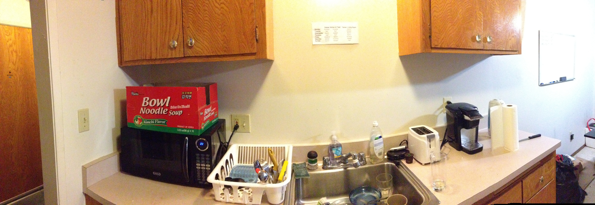

Our project's goal was to make sure the dishes got done in Aatash's apartment. Our initial aim was to have the object select one of Aatash's roommates to do the dishes. The object would monitor the pile of dishes and, once a certain threshold was reached, choose one roommate to do the dishes. We abandoned this idea in favor of one that encouraged doing the dishes rather than punishing for not doing the dishes. Each time someone goes to do the dishes (picks up the dish soap), they will instantly be connected to the rest of the world and see each person who is also doing the dishes simultaneously.
No one really enjoys doing the dishes. In the kitchen of an apartment full of college students, it's even worse. In Aatash's apartment, dishes would pile up really quickly. Especially when the semester kicked in, dishes seemed to pile up as quickly as the homework did. Roommates would pass by the sink full of dishes, but be too busy (read: lazy) to actually clean them. And when it came to eat, they would eventually end up using disposable dishware instead!
We realized we could utilize the empty white wall right above the sink. (This is where our map would go.)
Our original idea was to have our device select one of Aatash's roommates to do the dishes. The object would monitor the pile of dishes and, once a certain threshold was reached, choose one roommate to do the dishes. And through a webcam, it would enforce that the unlucky chosen roommate actually did the dishes.
After some thought, we decided that instead of punishing people into doing the dishes, what we took another approach. Why not make doing dishes fun? Hence was born our slogan "Don't you wanna do the dishes?"" and the second iteration of our idea, in which we would turn doing the dishes into an enjoyable and social experience.